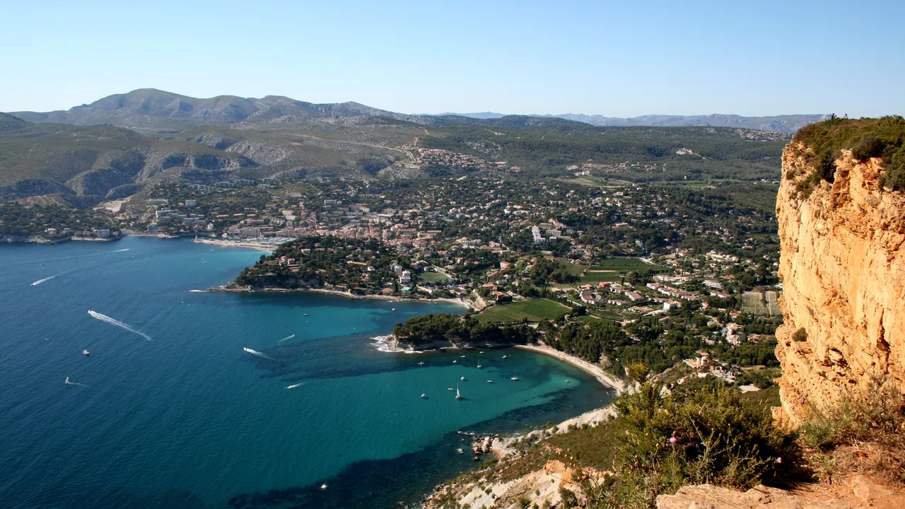
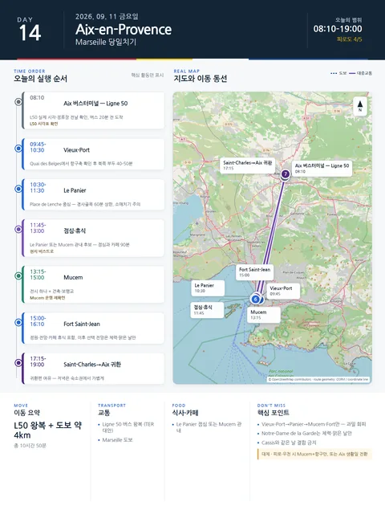

Day 14 · 9/11 금 · Aix

오늘의 주요 장소

- 핵심 실행
- Marseille 대중교통 당일치기
- 권장 출발
- L50 시각 기준 역산
- 완충
- 버스 20분 전·점심과 카페 90분
- 예약
- 이 날짜로 잡힌 예약 없음 · 현황
시간표
| 시간 | 일정 | 실행 포인트 |
|---|---|---|
| 08:10 | Aix 숙소 출발 | Ligne 50 실제 시각·정류장 전날 확인 |
| 09:45–10:30 | Vieux-Port | 항구축을 읽고 북쪽 부두로 이동 |
| 10:30–11:30 | Le Panier | Place de Lenche 중심, 경사골목 60분 상한 |
| 11:45–13:00 | 점심·휴식 | Le Panier 또는 Mucem 관내 후보 |
| 13:15–15:00 | Mucem | 전시 하나 + 건축·보행교 |
| 15:00–16:10 | Fort Saint-Jean | 정원·전망·카페 휴식 포함 |
| 16:10 이후 | Vieux-Port 또는 선택 전망 | Notre-Dame de la Garde는 체력·맑은 날만 |
| 17:15–19:00 | Saint-Charles→Aix 귀환 | 귀환편 여유, 저녁은 숙소권에서 가볍게 |
피로도
4/5
이 날의 장소
일자별 시간표와 본문 표기에서 찾은 것이다. 하루의 전부가 아니라 장소 카드가 있는 것만 담는다.
이 날의 메모
Marseille — 오래된 항구에서 현대 지중해 문화까지
Cassis·Calanques, LUMA, 해안 장거리 산책을 추가하지 않는다.
Cassis 선택 대안
- 바다·석회암 경관을 항구대도시보다 우선하고 기상·화재통제가 안정적일 때만 Marseille 하루를 통째로 교체한다.
- Cassis 항구와 짧은 보트 또는 해안산책 하나만 선택한다.
- Marseille와 Cassis를 같은 날 결합하지 않는다.
상세 실행 확인
- 최고 리스크
- 혼잡·소매치기·Mucem 화요일 휴관 변수 없음
- 우선 삭제
- Notre-Dame de la Garde
- 대체안
- Mucem·Fort만 또는 Aix 생활일
- 식사·휴식
- Vieux-Port/Le Panier 점심
- 잠금 필요
- L50·Mucem 운영
Google 실행지도
Marseille 당일 — Vieux-Port · Le Panier · Mucem
지도 펼치기
지도는 펼칠 때만 불러옵니다.
Daily Action Map

실제 좌표와 OpenStreetMap을 사용한 실행용 요약입니다. 도로·대중교통 상황은 출발 직전에 다시 확인하세요.